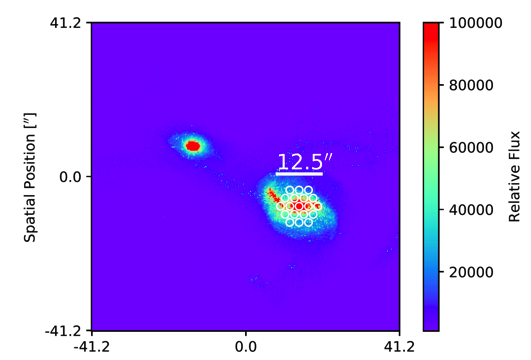
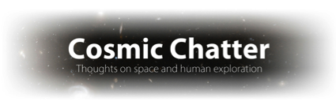
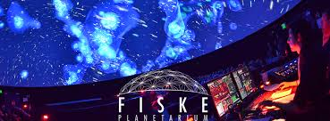

I’m a sixth year graduate student at CU Boulder. I’m working with Julie Comerford, Laura Blecha, and Francisco Müller-Sánchez on observations of AGN Outflows, double-peaked AGN, and merging galaxies in MaNGA.
I’m currently developing a kinematic and imaging classification scheme to identify merging galaxies from the Sloan Digital Sky Survey as well as the 10,000 galaxies in the MaNGA (Mapping nearby galaxies at Apache Point) survey. I’m using Gadget SPH/ SUNRISE radiative transfer simulations of galaxy mergers to develop this scheme and characterize its limitations. The statistical robustness of SDSS will enable me to make interesting conclusions about merging galaxies, AGN activity within these galaxies, and the stellar kinematics of merging galaxies.
You can find the classification code on my Github page.

I extract synthetic spectra and images from the simulated merging galaxies using the specifications of the MaNGA survey (above). For more details see the research page.
I also study double-peaked AGN from SDSS (many of which are AGN outflows). You can find more details on my research page.
Published Work:
- Accurate Identification of Galaxy Mergers with Imaging
- Feedback from Biconical AGN Outflows
- A new kinematic classification scheme for double-peaked AGN
- Presenting the double-peaked sample with longslit and complementary radio observations - some of these are dual AGN, most are outflows
- Years ago I was involved in an instrumentation project for the HiVIS Spectropolarimeter on Haleakala
Talk Videos:
(Speaking about my work on identifying merging galaxies at Carnegie Observatories)
https://aas.org/media-press/archived-aas-press-conference-webcasts
(A link to the AAS press conference I spoke at as part of the SDSS team)
Teaching:
I had the opportunity to teach ASTR-1000 (The Solar System) as instructor of record at CU Boulder. I strongly believe in using this type of entry-level astronomy course as a tool to develop scientific thinking in students, so I developed the course to encourage this result. I wrote the syllabus, planned the lectures, instituted a backward learning approach, included a ‘Science in the News’ investigative element, and used inquiry-based learning tools such as clickers and discussion based activities. Here is my course syllabus.
Science Writing:
I write for three different astronomy blogs:
Universe Today - Linked to an interesting piece I wrote about the Earth’s gradually decelerating rotation.
Cosmic Chatter - This is a shared astronomy news blog with Morgan Rehnberg. We write about the latest happenings in astronomy in a friendly format for scientifically interested non-astronomers.
Unraveling the Sky - This is my own private blog that I write with the purpose of uncovering common misconceptions in astronomy. I write about anything from the inaccuracies in the movie Gravity to the demise of the dinosaurs via giant asteroid.

Outreach and Communication:
I run two planetarium series at Fiske planetarium:
Science and Society, a series that examines society’s interaction with science and welcomes the audience to participate in the discussion
The Science of Sci-Fi, which explores science through the lens of popular movies and books, i.e. The science of black holes through the movie Interstellar

Here is my CV:
cv